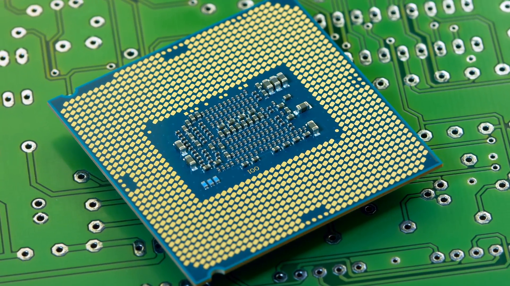
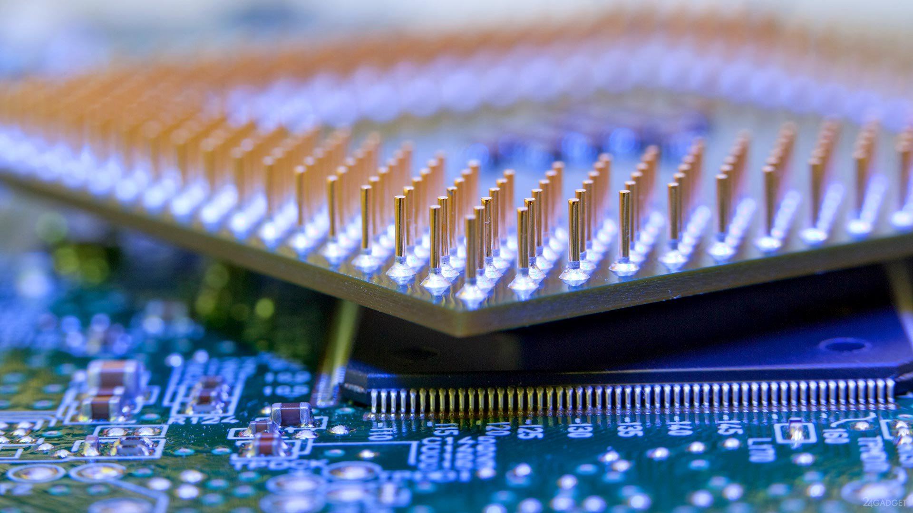

|
| |
Контакты процессора(его "ножки")Контакты микропроцессора это специальная текстолитовая подложка, к которой крепятся все остальные части процессора, кроме того она играет роль контактной площадки - на ее обратной стороне есть большое количество золотистых "точек" - это контакты (на рисунке их немного видно). Благодаря контактной площадке (подложке) обеспечивается тесное взаимодействие с кристаллом, ибо напрямую хоть как нибудь воздействовать на кристалл не представляется возможным.  Контактная группа Intel Контактная группа Amd |
Socket (разг. - сокет) центрального процессора - это разъем, расположенный на материнской плате компьютера, к которому подсоединяется центральный процессор. Процессор, прежде чем он будет установлен в материнскую плату, должен подходить ей по сокету. Очень просто разобраться в том, что такое сокет процессора, если вспомнить, что последний – это и есть микросхема, только относительно крупных размеров. Сокет расположен на материнской плате, внешне выглядит как невысокая прямоугольная конструкция с множеством отверстий, количество которых соответствует ножкам процессора. Для надежной фиксации вставленной микросхемы в сокете применяется механическая защелка специальной конструкции. Отметим, что компания Intel, в отличие от AMD, с недавних пор использует иной принцип соединения процессора и платы.